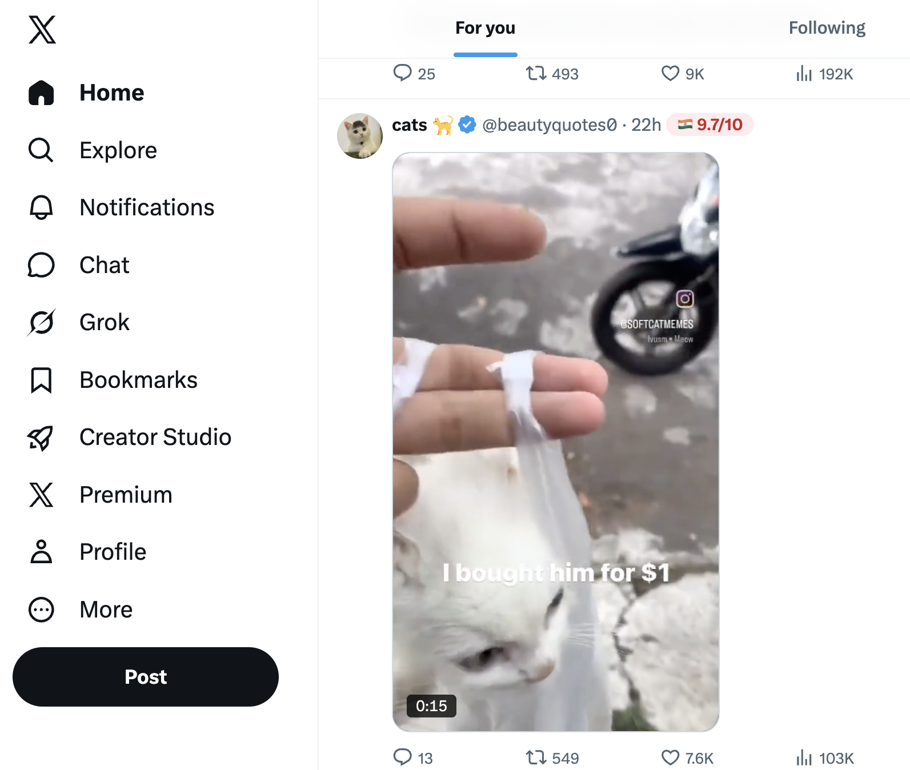
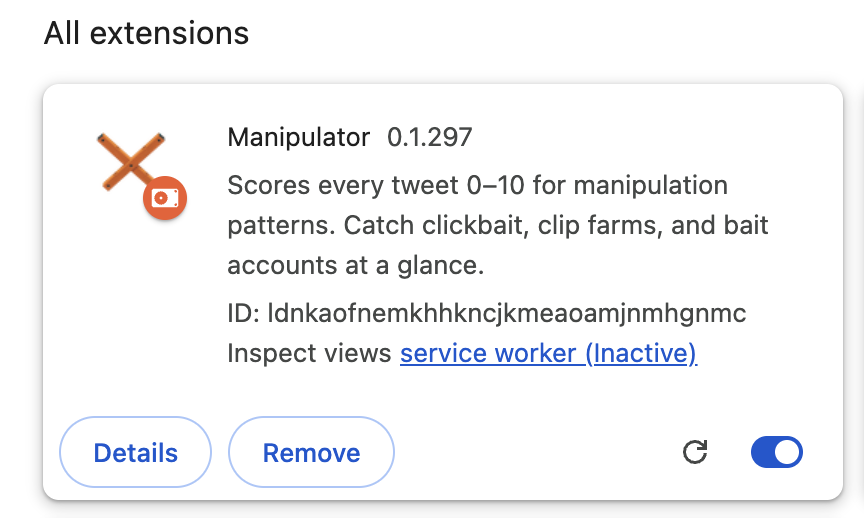
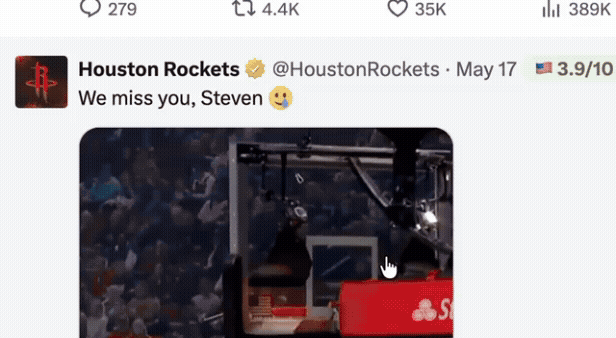
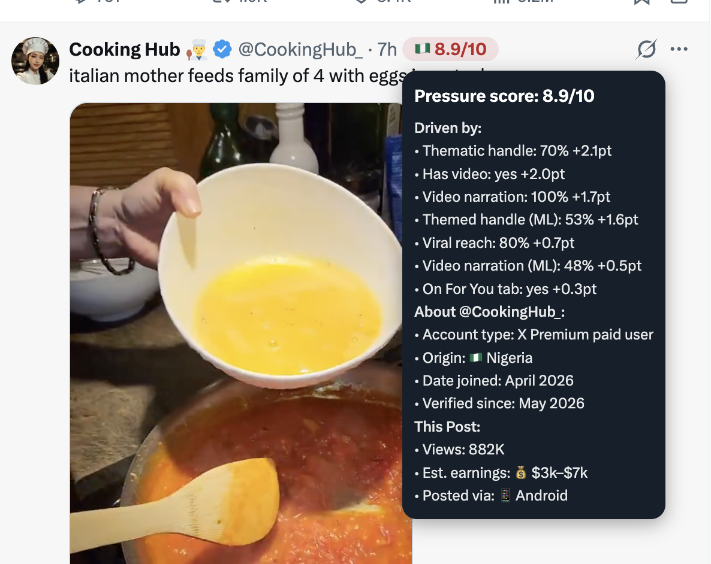
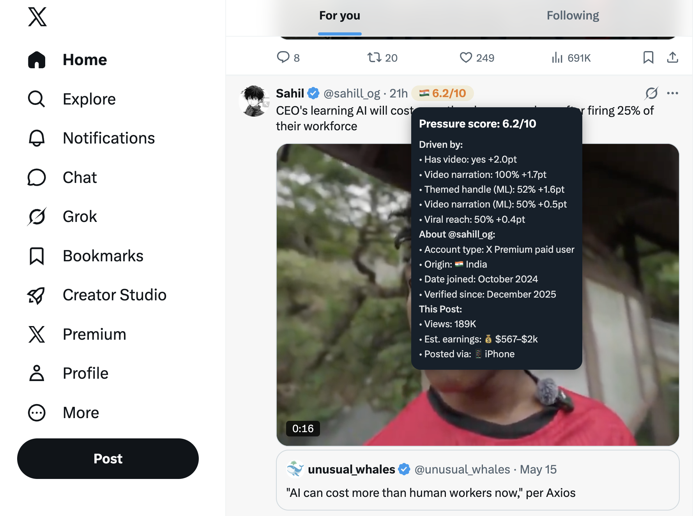
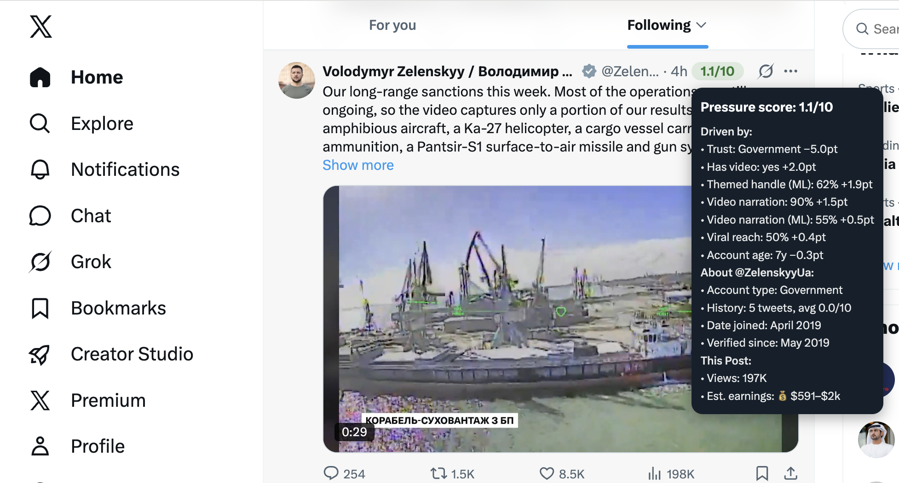

Manipulator scores every tweet 0–10 for engagement bait — clickbait, clip farms, themed accounts. Powered by a local AI that never sends your data anywhere.

A 70 MB neural network classifies each tweet's caption and account name in real time — without ever leaving your browser.
Every tweet gets a badge the moment it appears in your feed. Hover for the full reason it scored where it did.
No analytics. No telemetry. Your tweets, handles, and history are read once, used locally, and forgotten.
Three steps. No setup. The AI does the rest.
Add Manipulator from the Chrome Web Store. No account, no signup, no settings to configure.

The AI scores every tweet as it scrolls into view. A small badge appears inline next to the timestamp.

The tooltip shows which signals fired, the poster's identity, country flag, and how their past tweets have scored over time.

Manipulator ships with a quantized zero-shot classifier — the same kind of model that powers modern text understanding, just shrunk down to fit in your browser.
The first time you open X, the model downloads once (~70 MB, cached forever). After that, every classification happens locally in milliseconds. Nothing is ever sent to a remote server.

The score is just a number. Hover to see exactly why it landed there.

Install Manipulator and see the engineering behind your feed.
Add to ChromeFree · Open source · No account required